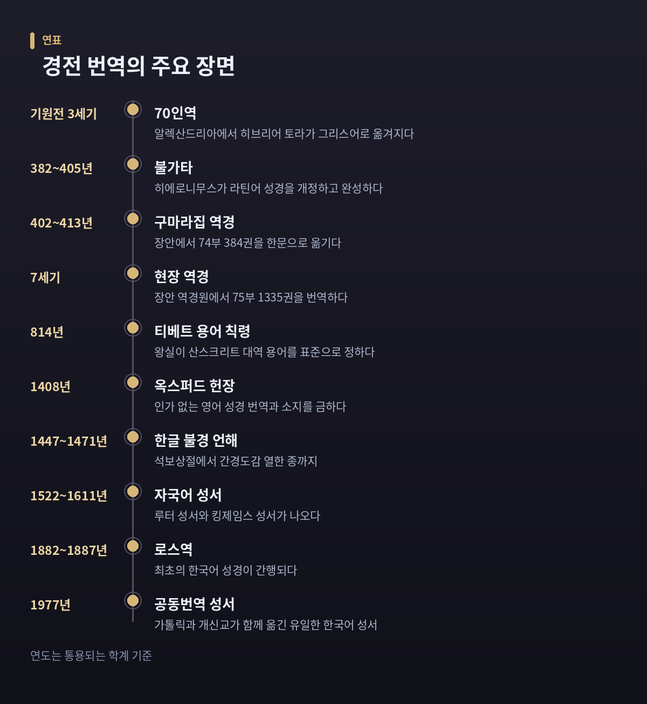
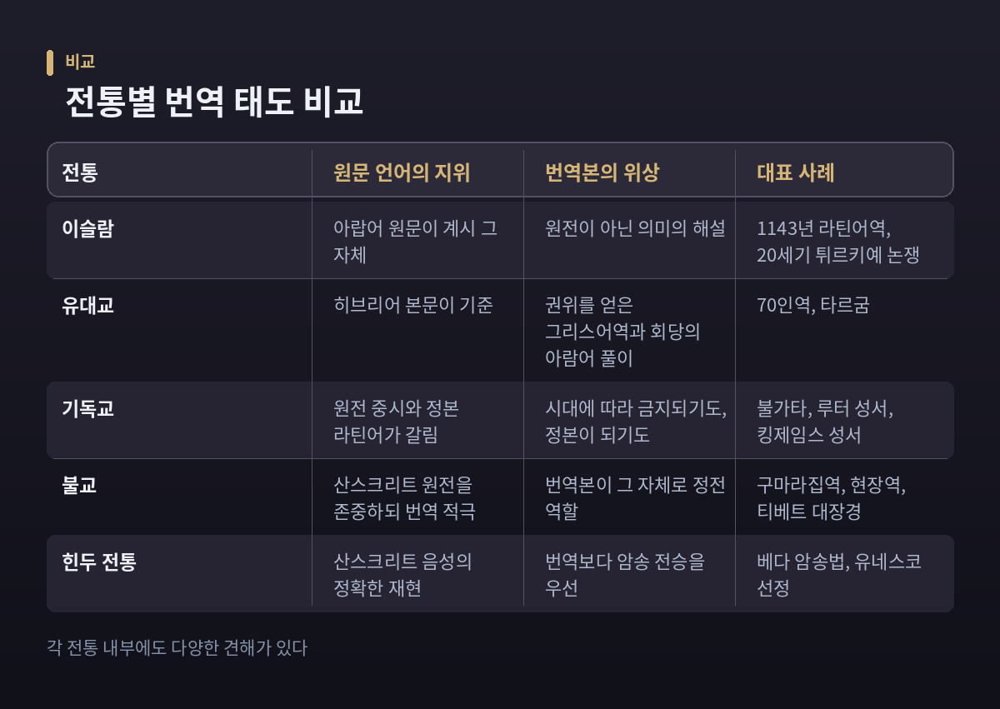
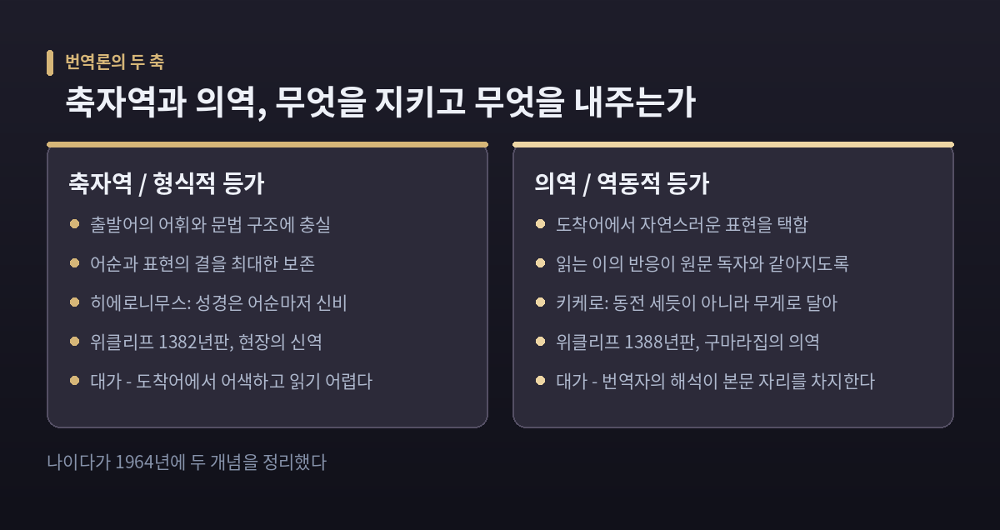
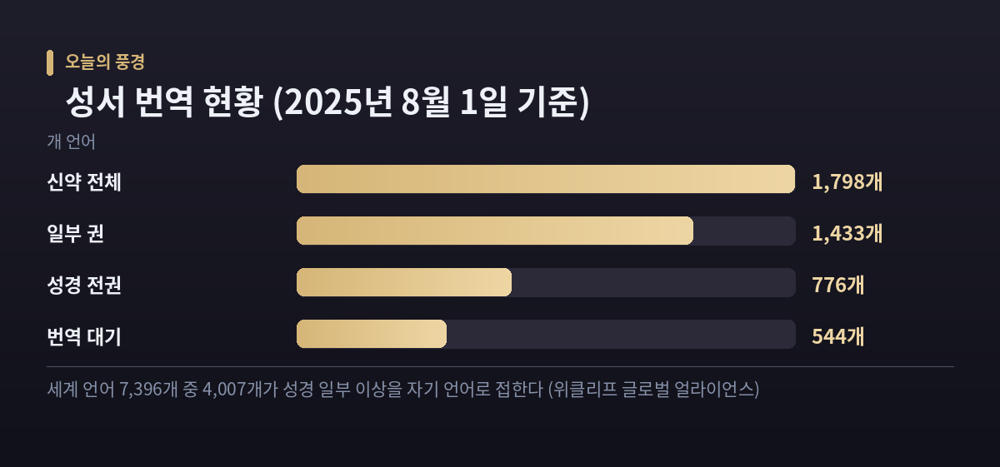

이번 글에서는 경전 번역을 둘러싼 종교 전통들의 갈림길을 정리해 보겠습니다. 같은 질문 앞에서 각 공동체가 왜 서로 다른 답을 냈는지, 그 이유를 따라가 보려 합니다. 어느 쪽이 옳은지를 가리는 글이 아닙니다.
먼저 세 줄로 요약합니다.
이슬람 전통에서 꾸란은 아랍어로 계시된 하느님의 말씀 그 자체로 이해됩니다. 이 믿음은 '이으자즈', 곧 모방할 수 없음이라는 관념과 곧바로 이어집니다.
그래서 다른 언어로 옮긴 결과물은 원전이 아니라 해석적 텍스트로 분류됩니다. 연구자들은 이를 두고 "꾸란 번역은 언어적 전이라기보다 다른 언어로 쓴 주석(타프시르)에 가깝다"고 설명합니다.
영어권 번역본 표지에 "The Meaning of the Glorious Qur'an" 같은 제목이 붙는 배경이 여기 있습니다. 번역본을 '꾸란'이라 부르지 않고 '의미의 해설'로 부르는 관행입니다.
고전 학자 이븐 쿠타이바는 이 번역 불가능성의 근거를 아랍어가 지닌 비유 표현의 능력에서 찾았습니다. 흥미로운 점은 이 태도가 표준 번역본을 만들려는 동기를 약하게 만들었다는 분석입니다.
서구가 꾸란을 처음 라틴어로 옮긴 것은 1143년입니다. 클뤼니 수도원장 가경자 베드로가 1141~1142년경 번역팀을 꾸렸고, 로베르투스 케토넨시스가 작업을 맡았습니다. 이 번역은 24개 필사본으로 전해지며, 중세 유럽이 꾸란을 접하는 주된 통로였습니다.
20세기 초에는 논쟁이 다시 불붙었습니다. 무함마드 라시드 리다는 국가가 주도한 튀르키예어 번역 사업을 아랍어 꾸란을 밀어내려는 계획으로 규정했습니다. 오스만 제국 마지막 셰이흐 알이슬람이었던 무스타파 사브리(1869~1954)를 비롯한 학자들도 '의미의 번역'조차 출판에 반대했습니다.
다만 이 반대가 순수한 언어 문제만은 아니었습니다. 당시 번역 운동이 세속주의·민족주의와 결합해 있었다는 정치적 맥락을 연구자들은 함께 지적합니다.
히브리어 경전이 그리스어로 옮겨진 것은 기원전 3세기 이집트 알렉산드리아에서였습니다. 통상 기원전 250년경, 프톨레마이오스 2세 시대로 봅니다.
「아리스테아스의 편지」는 이 사건을 이렇게 전합니다. 예루살렘 대제사장이 열두 지파에서 각 여섯 명씩, 모두 일흔두 명의 번역자를 보냈고, 그들이 일흔두 날 만에 번역을 끝냈다는 이야기입니다. '70인역'이라는 이름이 여기서 나왔습니다.
현대 학계는 이 서사를 번역의 권위를 세우려는 변증적 이야기로 읽습니다. 실제로는 토라 다섯 권을 다섯 명 정도가 나누어 옮겼을 가능성이 높다고 보지요.
전설과 재구성, 어느 쪽이든 한 가지는 분명합니다. 70인역은 성스러운 말이 다른 언어로 옮겨져 권위를 인정받은 최초의 대규모 사례였습니다.
한편 아람어가 일상어가 되자 회당에서는 다른 방식이 자리 잡았습니다. 히브리어 본문을 낭독한 뒤 아람어로 풀어주는 관행, 곧 타르굼입니다. 예언서 타르굼은 팔레스타인에서 시작해 바빌로니아에서 최종 편집되었고, 성문서의 아람어 역은 5세기 이전으로 올라가는 것이 없습니다.
타르굼은 축자 번역이라기보다 해설이 섞인 풀이에 가깝습니다. '번역'과 '주석'의 경계가 처음부터 흐렸다는 뜻입니다.
382년, 히에로니무스는 기존 라틴어 복음서를 그리스어 사본과 대조해 고치기 시작했습니다. 그 결과가 불가타입니다. 이름은 '흔한 말'을 뜻하는 라틴어 vulgus에서 왔고, 완성은 405년경으로 전해집니다.
번역론의 가장 유명한 문장도 그가 남겼습니다. 팜마키우스에게 보낸 서한 57에서 그는 이렇게 적었습니다.
"나는 그리스어를 옮길 때 — 성경만은 예외인데, 거기서는 어순마저 신비이기 때문이다 — 말 대 말이 아니라 뜻 대 뜻으로 옮긴다."
일반 문헌에는 의역을, 성경에는 축자역을 적용한 셈입니다. 이 이중 기준이 이후 천오백 년 논쟁의 출발점이 됩니다. 참고로 '뜻 대 뜻'이라는 발상 자체는 키케로까지 거슬러 올라갑니다. 그는 낱말을 동전 세듯 건네지 않고 무게로 달아 치렀다고 썼지요.
자국어 번역의 길은 험했습니다. 1382년 존 위클리프 계열에서 최초의 완역 중세 영어 성서가 나왔습니다. 1382년판은 라틴어를 낱말 단위로 따라간 극단적 축자역, 1388년 개정판은 영어 어법에 맞춘 판이었습니다. 한 사업 안에서 두 노선이 함께 실험된 것입니다.
1408년 '옥스퍼드 헌장'은 주교의 인가 없이 성경을 영어로 옮기거나 그 번역을 소지·낭독하는 일을 파문으로 금했습니다. 금지의 배경에는 평신도가 성경을 직접 읽으면 교회의 해석 권위를 거부하리라는 우려가 있었다고 연구자들은 봅니다.
윌리엄 틴들은 그리스어와 히브리어 원전에서 영어로 옮겼습니다. 그는 1536년 10월 6일 브뤼셀 인근에서 교수형을 당한 뒤 화형에 처해졌습니다.
같은 시기 독일에서는 마르틴 루터가 신약을 1522년에, 구약을 포함한 완역을 1534년에 내놓았습니다. 그리고 1611년 킹제임스 성서가 나왔습니다. 한 추정에 따르면 그 구약 어휘의 약 76퍼센트, 신약의 약 84퍼센트가 틴들에서 왔습니다. 산정 방식에 따라 달라지는 수치이기는 합니다.
반대편의 판단도 함께 보아야 합니다. 1546년 4월 8일 트리엔트 공의회 제4회기는 라틴어 불가타를 교회의 정본으로 선언했습니다. 개혁 진영은 원전과 자국어를, 가톨릭 측은 오랜 전례 안에서 검증된 단일 본문을 택했습니다. 두 판단 모두 '본문의 신뢰성을 어떻게 지킬 것인가'라는 같은 질문에 대한 답이었습니다.

인도어 경전을 한문으로 옮기는 일은 동아시아 최대의 번역 사업이었습니다. 그 한가운데 두 사람이 있습니다.
구마라집은 후진 시기 장안에서 역경을 주재했습니다. 402년부터 413년까지 74부 384권을 옮긴 것으로 집계됩니다. 그 이전의 번역이 축자역 중심이었던 데 비해, 그는 뜻을 살리면서 한문으로 읽었을 때의 문학적 결을 중시했습니다. 그가 옮긴 『금강경』과 『법화경』은 지금도 동아시아에서 가장 널리 읽히는 판본입니다.
현장은 다른 길을 걸었습니다. 황제의 후원으로 장안에 대규모 역경원을 세웠고, 생애 동안 75부 1,335권을 번역했습니다. 부수는 구마라집과 비슷하지만 권수는 세 배가 넘습니다. 방향도 달랐습니다. 원문에 더 밀착한 '신역' 노선이었습니다.
현장에게 귀속되는 원칙이 '오종불번'입니다. 번역하지 않고 소리를 그대로 옮겨 적어야 할 다섯 경우를 정리한 것으로, 주문(다라니)이 그중 하나입니다.
여기서 한 가지를 짚고 싶습니다. 오종불번은 "번역할 수 없으니 옮기지 말라"가 아닙니다. "어떤 말은 소리를 남기는 편이 낫다"는 실무적 선택의 기준입니다. 최근 연구는 이 원칙이 후대에 '번역의 본질적 한계'로 과대 해석되는 경향이 있다고 지적하기도 합니다.
티베트는 또 다른 해법을 택했습니다. 번역 용어를 국가가 통일한 것입니다.
산스크리트-티베트어 대역 용어집인 『마하뷰트파티』와 짝을 이루는 『두 권짜리 용어집』이 그 결과물입니다. 초판은 783년 트리송 데첸 왕 치세에 편찬되었고, 814년 칙령본이 따로 전합니다. 왕실 칙령은 763년, 783년, 814년 세 차례로 정리됩니다.
제정 이유가 흥미롭습니다. 814년본 서문은 이렇게 밝힙니다. 이전 번역자들이 제각각 새 종교 용어를 만들어 쓰는 바람에, 티베트인에게 낯설 뿐 아니라 교리서와 문법 관행에도 어긋나는 경우가 생겼다는 것입니다.
덕분에 티베트 대장경은 역자별 편차가 작습니다. 티베트어에서 산스크리트 원문을 되짚어 올라가기 쉬운 문헌군이 되었지요. 표준화가 얻은 것과 잃은 것을 함께 보여주는 사례입니다.
베다는 문자로 적지 않고 입에서 입으로 전해졌습니다. 한 연구의 집계로 리그베다는 15만 3,826단어, 야주르베다는 10만 9,287단어 규모입니다.
정확한 전승을 위해 여러 암송법이 개발되었습니다. 기본형 외에 자타, 말라, 시카, 레카, 드바자, 단다, 라타, 가나에 이르기까지 점점 복잡해지는 순열 암송법이 있습니다.
원리가 정교합니다. 같은 낱말들을 순서를 바꿔가며 반복하게 만들어, 한 낱말이라도 틀리면 다른 배열에서 어긋남이 드러나도록 설계했습니다. 사람의 기억 속에 심어둔 오류 검출 장치인 셈입니다.
2003년 유네스코는 '베다 찬송 전통'을 인류 무형문화유산 걸작으로 선정했습니다. 선정 사유에 전승의 정확성이 명시되었습니다.
여기서 성스러운 말을 지키는 방법은 번역도 필사도 아닙니다. 소리 그 자체의 재현입니다. 뜻보다 음성적 정확성이 앞선다는 점에서, 꾸란의 아랍어 중심주의와 나란히 놓고 볼 만한 또 하나의 축입니다.

논쟁의 축은 놀랄 만큼 오래 유지되었습니다. 키케로에서 히에로니무스로, 다시 위클리프의 두 판본으로 이어진 그 질문입니다.
현대 번역학에서 이 축을 다시 정리한 사람이 유진 나이다입니다. 그는 1964년 『Toward a Science of Translating』에서 두 개념을 제시했습니다.
형식적 등가는 출발어의 어휘 세부와 문법 구조에 충실한 번역입니다. 역동적 등가는 도착어에서 자연스러운 표현을 택하는 번역입니다. 나이다는 역동적 등가를 "수용자의 반응이 원문 수용자의 반응과 본질적으로 같아지는 번역의 질"로 정의했습니다.
그는 이 방식이 표현의 완전한 자연스러움을 지향한다고 설명했습니다. 수용자가 출발어 문화를 이해해야만 메시지를 알아들을 수 있도록 요구하지 않는다는 것입니다.
비판도 만만치 않습니다. 역동적 등가가 사실상 번역 방법이 아니라 해석학 체계로 작동해, 번역자의 해석이 본문 자리를 차지한다는 지적이 대표적입니다.
예전에는 이 논쟁이 신학의 문제였습니다. 지금은 번역학과 언어학의 문제이기도 합니다. 다만 질문 자체는 그대로입니다.

번역은 언어를 옮기는 일로 끝나지 않았습니다. 때로 없던 문자를 만들어냈습니다.
메스로프 마슈토츠는 405년 아르메니아 문자를 창제했습니다. 처음 36자로 출발했고, 13세기에 두 자가 더해졌습니다. 창제 목적 자체가 성서를 아르메니아어로 옮겨 사람들이 읽게 하는 것이었습니다. 9세기 키릴로스와 메토디오스도 슬라브인에게 전도하며 글라골 문자를 고안했습니다.
한국어 사례도 같은 결을 보여줍니다. 『석보상절』(1447)은 한글로 된 최초의 산문 자료이자, 한문 불경을 한글로 옮긴 최초의 사례입니다. 1446년 소헌왕후가 세상을 떠나자 명복을 빌기 위해 펴낸 책이지요.
『월인석보』(1459)는 더 특별합니다. 권1 앞부분에 한글로 번역된 「훈민정음 언해」가 실려 있는데, 지금까지 발견된 문헌 중 훈민정음 언해를 담은 최초의 책입니다. 이어 1461년 간경도감이 설치되어 1471년 폐지될 때까지 열한 종의 경전을 한글로 옮겼습니다.
숫자가 말해 줍니다. 훈민정음 창제 후 15세기 말까지 간행되어 현존하는 언해 문헌이 30여 종인데, 그중 불교 관련 언해서가 20여 종입니다. 새 문자는 경전 번역을 통해 실제로 쓰이며 정착했습니다.
가장 오래 남은 난제는 고유명사입니다. 신의 이름을 옮기는 문제 말입니다.
1882년 스코틀랜드 선교사 존 로스가 『예수셩교 누가복음젼셔』를 펴냈습니다. 최초의 한국어 성경입니다. 1887년에는 신약 전체인 『예수셩교젼셔』가 나왔습니다. 실제 번역의 주역은 이응찬·백홍준·서상륜 같은 한국인들이었습니다. 이들이 중국어 신약을 보며 옮기고, 로스와 매킨타이어가 그리스어·영어 개역본과 대조해 고쳤습니다.
용어 선택이 눈여겨볼 대목입니다. 로스는 선교 보고서에서 '하늘'과 '님'의 합성어인 '하느님'이 가장 적합하다고 적었습니다. 지식인층의 한문식 표현인 상제나 천주 대신, 민중이 쓰던 말을 택한 것입니다.
이후 표기는 움직였습니다. 1882년 누가복음과 요한복음까지는 '하느님'이었고, 1883년판에는 이미 '하나님'이 보입니다. 개신교에서 '하나님'이 굳어진 경위로는, 개역 성서 번역 과정에서 옛 아래아 표기를 현대 'ㅏ'로 정리하면서 정착했다는 설명이 제시됩니다.
1977년 4월 10일에는 공동번역 성서가 나왔습니다. 한국 가톨릭과 개신교가 함께 번역한 유일한 한국어 성서입니다. 타협의 방식이 인상적입니다. 가톨릭의 '천주'와 개신교의 '하나님'을 둘 다 내려놓고, 어느 쪽도 공식적으로 쓰지 않던 제3안 '하느님'을 택했습니다.
수용은 순탄하지 않았습니다. 개신교 교단들은 '하나님' 대신 '하느님', '여호와' 대신 '야훼'를 쓴 데 반발했습니다. 오늘날 공동번역을 예배에 쓰는 곳은 대한성공회와 한국정교회 정도입니다.
이 논쟁은 한국만의 일이 아닙니다. 마테오 리치는 중국에서 '천주'를 제시하며 고대 중국의 '상제' 개념과 연결하려 했습니다. 1840년대 개신교 선교사들의 번역 과정에서는 상제파와 신파가 정면으로 충돌했습니다. 상제파는 고대 중국에 이미 유일신 관념이 있었다고 보았고, 신파는 상제에 다신교적 오해의 소지가 있다고 보았습니다. 1850년 미국성서공회는 '신'을 택했습니다.
어느 쪽이 맞느냐를 따지는 것은 이 글의 몫이 아닙니다. 중요한 것은 각 공동체가 무엇을 우선했는가입니다. 전통의 연속성인가, 어원의 정확성인가, 대중의 친숙함인가, 다른 신앙과의 구별인가. 답이 다른 이유는 기준이 달랐기 때문입니다.
번역은 지금도 진행 중입니다.
위클리프 글로벌 얼라이언스가 집계한 2025년 8월 1일 기준 수치를 보면, 세계 언어 7,396개 가운데 4,007개 언어 사용자가 성경의 최소 한 권 이상을 자기 언어로 접할 수 있습니다. 성경 전권은 776개 언어, 신약 전체는 1,798개 언어, 일부 권은 1,433개 언어입니다. 번역 착수를 기다리는 언어는 544개로, 약 3,680만 명에 해당합니다.
1999년 이후 번역 사업이 새로 시작된, 그전까지 성경이 전혀 없던 언어는 4,600개가 넘습니다.

정리하면 이렇습니다.
같은 질문 앞에서 전통들은 각기 다른 답을 냈습니다. 어떤 전통은 원문 언어를 신앙의 일부로 지켰고, 어떤 전통은 번역을 통해 문자를 만들었습니다. 어떤 전통은 국가가 용어를 통일했고, 어떤 전통은 아예 번역 대신 소리를 보존했습니다.
이 차이는 우열이 아닙니다. 각 공동체가 무엇을 가장 잃고 싶지 않았는지의 차이입니다.
— 번역을 둘러싼 판단은 언어의 문제가 아니라, 그 공동체가 지키려는 것이 무엇인지에 관한 문제입니다.
성스러운 말을 옮길 수 있느냐고 물으신다면, 각 전통이 이미 오래전에 답을 내놓았다고 말씀드리겠습니다. 다만 그 답이 저마다 달랐을 뿐입니다.